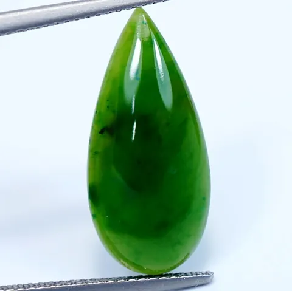

翡翠鑑定：比重、折射率與紫外燈快篩
翡翠鑑定沒有捷徑，但有「四步快篩」——比重、折射率、放大鏡、紫外燈，四招識破九成假貨。

核心定義
翡翠（硬玉）鑑定的核心是「確認礦物身分＋排除處理」：礦物身分用比重、折射率、光譜確認；處理狀態（B/C 貨）用放大鏡與紫外燈輔助。四步快篩是入門，實驗室儀器是終審。
四步快篩：① 比重（翡翠約 3.33，手感壓手）；② 折射率（翡翠約 1.66）；③ 十倍放大鏡看結構與裂隙（B 貨酸蝕紋）；④ 紫外燈（B 貨樹脂螢光）。四招過關，再談品質。
特徵與分類
| 項目 | 翡翠 | 水沫子（鈉長石） | 玉髓 | 葡萄石 |
|---|---|---|---|---|
| 比重 | 約 3.33 | 約 2.6 | 約 2.6 | 約 2.9 |
| 折射率 | 約 1.66 | 約 1.53 | 約 1.54 | 約 1.63 |
| 光澤 | 玻璃光 | 玻璃光偏弱 | 蠟狀 | 玻璃光 |
最常見的「翡翠替代品」：水沫子（鈉長石，比重 2.6 太輕）、玉髓（折射率 1.54）、葡萄石（比重 2.9）、石英岩（折射率 1.54）——比重與折射率兩招，就能把多數替代品擋在門外。
科學原理
比重測試的原理：翡翠密度高（3.33），同體積下明顯壓手——老行家「一上手就知道」就是比重的手感。折射儀測折射率（翡翠 1.66 單折射），與替代品區分清楚。
紫外燈的原理：B 貨樹脂在長波紫外下發藍白螢光，部分 C 貨染料也有反應——螢光是「處理警訊」，配合放大鏡的酸蝕紋，B/C 貨無所遁形。
鑑定與鑑別方法
- 比重：手掂壓手感＋精密天平實測約 3.33
- 折射儀：讀數約 1.66（單折射）
- 十倍放大鏡：看結構、裂隙、酸蝕紋
- 紫外燈：查樹脂螢光
- 分光鏡：看鉻/鐵吸收譜
- 最終以權威實驗室證書為準
市場行情與保養建議
市場現況：A 貨翡翠與水沫子、玉髓等替代品的價格差距可達百倍——「玉」字招牌下，替代品常被當翡翠賣。學會比重與折射率快篩，是省錢的第一課。
提醒：肉眼與快篩只能「排除」，不能「定論」。高價翡翠務必送權威實驗室（如 GIA、國檢）出具證書——實驗室才是翡翠身分的終審法官。
常見誤區
聲音是「結構緊密」的訊號，但高品質水沫子等也可能清脆——聲音只能當參考，不能當判決。
證書要看發證機構（權威實驗室）與標示完整性（A/B/C、處理揭露）——來路不明的「證書」本身也可能是假的。
冷知識
翡翠比重 3.33 明顯壓手，玉髓比重 2.6 輕飄——手感是千錘百煉的經驗，也是比重科學的直覺化。
B 貨的樹脂在紫外燈下像螢光筆——那抹藍白螢光，是樹脂充填的指紋。
反直覺觀點
比重手感不需要儀器——先用手掂，再用儀器驗證。幾百元的工具就能擋掉九成替代品，鑑定的成本遠低於踩雷的成本。
天然翡翠多帶石紋與棉絮，B 貨酸洗後「又透又乾淨」——過度完美的翡翠，反而是處理的候選人。